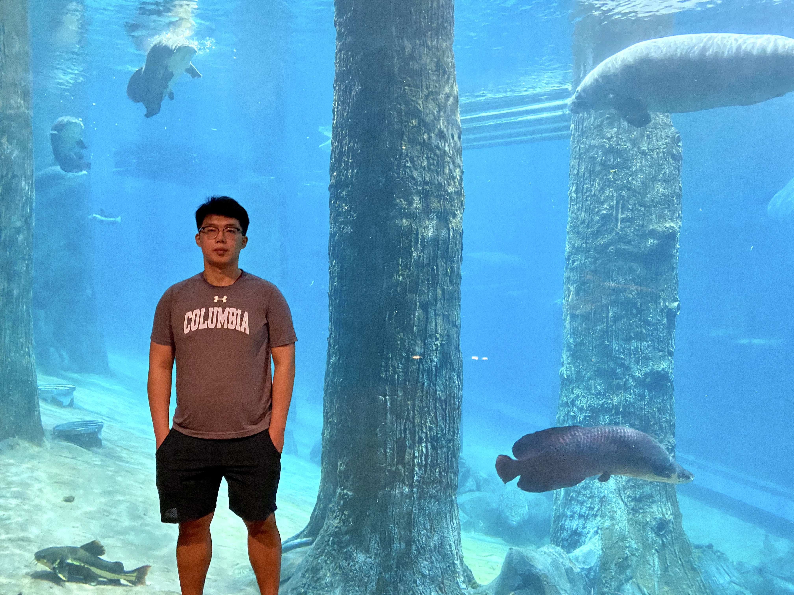

01 / GENERATE
Efficient Generation
Generate and edit images, videos, and dynamic 3D content with smaller models, fewer sampling steps, and less annotation.
Compact models · Fewer steps · Less annotation
Explore projects →
USTCPERSONAL ACADEMIC HOMEPAGE
李易聪
School of Information Science and Technology
University of Science and Technology of ChinaRESEARCH FOCUS
My research focuses on efficient intelligence: building models that generate, learn, and act with less computation and data.
Together with my students and collaborators, I study visual generation and editing, efficient model post-training, and agent systems. Across these directions, we ask how to reduce resource requirements while carefully evaluating task quality.
CVPR 2022 Best Paper Award Finalist · NUS Dean’s Graduate Research Excellence Award 2023 · NUS Research Achievement Award 2022
Three directions, one shared question: how much computation does a task really need?
Generate and edit images, videos, and dynamic 3D content with smaller models, fewer sampling steps, and less annotation.
Adapt general models to specific tasks through efficient alignment, concise reasoning, and the internalization of useful experience.
Study planning, tool use, and reusable memory for spatial understanding and simulation, with fewer model calls and lower token costs.
I welcome conversations about research collaboration, student projects, and practical applications of efficient generative models and agent systems.
lyc071719@gmail.com